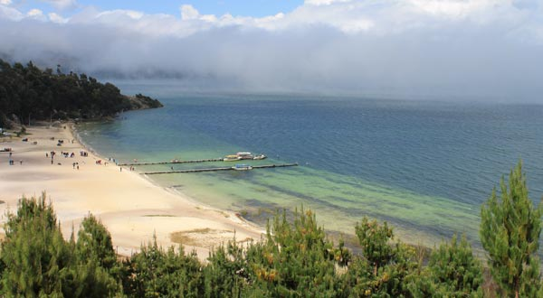
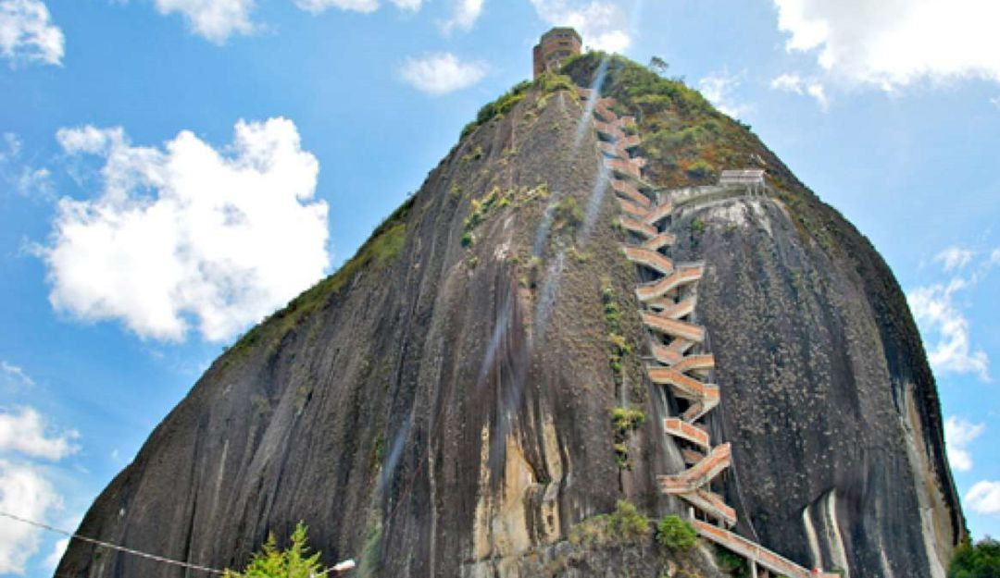
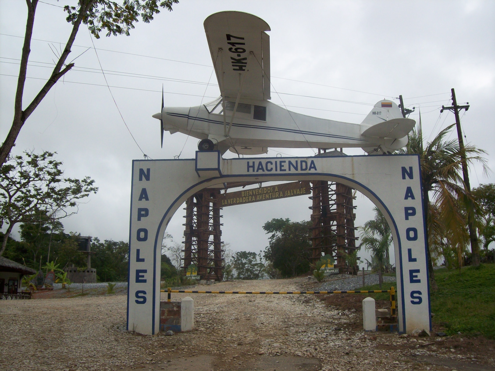

El lago de Tota es un cuerpo de agua natural situado en el departamento de Boyacá, Colombia, en jurisdicción de los municipios de Cuítiva, Tota y Aquitania. Se encuentra ubicado a 34 km al sur de Sogamoso, aproximadamente 200 km al noroeste de Bogotá, la capital del país. Con una superficie cercana a los 55 km² es el lago más grande de Colombia.5 Además, después del Titicaca es el segundo lago navegable a mayor altitud de América del Sur,67 al estar ubicado a 3.015 m s. n. m..4 Según el Instituto Geográfico Agustín Codazzi los suelos de la cuenca hidrográfica del Lago de Tota son de los más productivos y con mayor capacidad agrícola de Colombia. Esa región genera aproximadamente el 80 por ciento de la producción total de cebolla larga del país.8
Una de las poblaciones más visitadas en Antioquia es Guatapé. Situada a 75 kilómetros de Medellín en el oriente del Departamento, tiene una historia para contar, que está siendo conocida por los visitantes que llegan diariamente atraídos por las fotografías de miles de viajeros que dejan testimonio de su belleza en las redes sociales.
La Hacienda Nápoles es el nombre que tuviera en el pasado lo que hoy se conoce y reconoce como el Parque Temático Hacienda Nápoles, definido como un centro de entretenimiento familiar a espacio abierto, ubicado en la República de Colombia, localidad de Doradal, departamento de Antioquia, cuyo eje central es un enorme santuario para la protección de fauna en peligro o amenazada, grandes atracciones de agua, contenidos culturales, lúdicos y ambientales, y una política constante en rescate y conservación de fauna y flora
